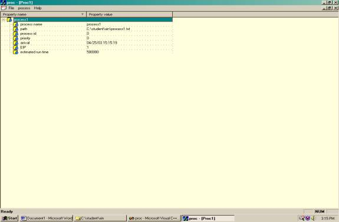
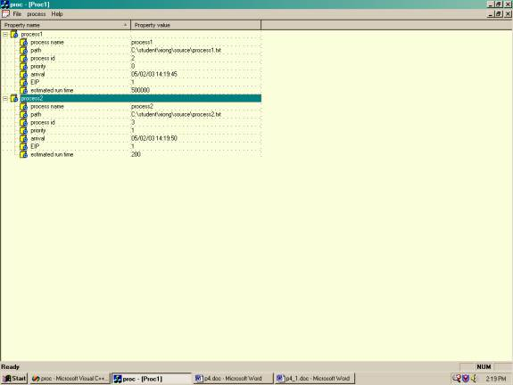
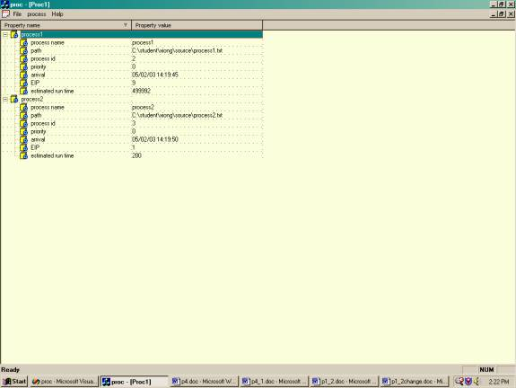
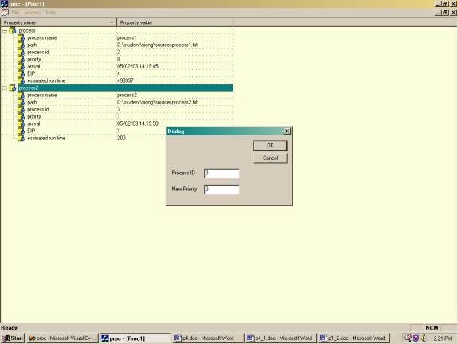
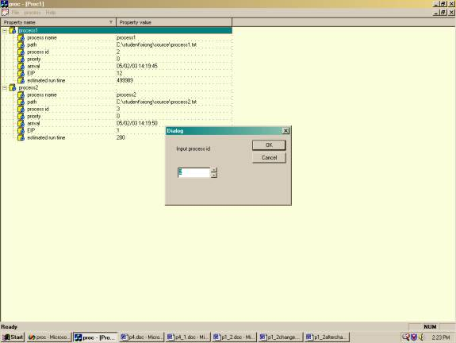
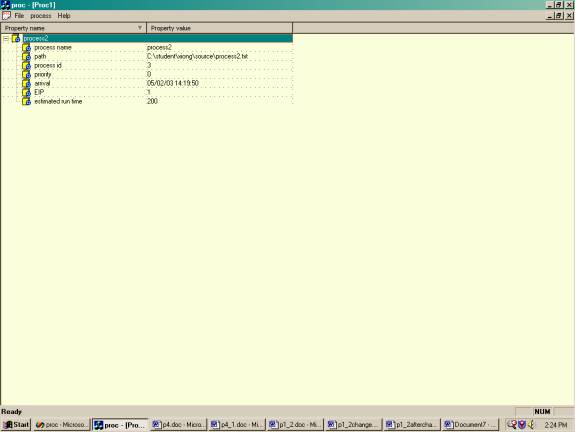
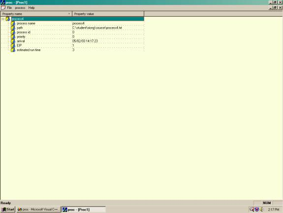
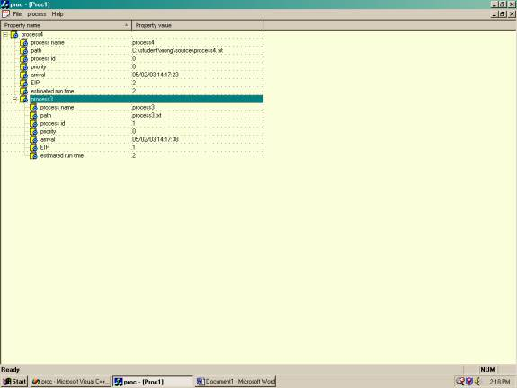

Project Report:
Introduction: The purpose of this project is to understand and simulate the process management services of an operating system.
User guide:
- Open Microsoft visual C++ 6.0
- Open a workspace
- Load proc.dsw
- Rebuild all program
- Run the program
- When the friendly interface prompt out, use mouse simulate the process management.
Our project has
implemented the following functions:
1. To create a new process, we use the updateProc() function to load the process and display its attributes:

Figure 1. Create Process
Attributes of Processes
· Process name
· Path: the path represents the location where the process is loaded.
· Process ID: a unique value for each process.
o When a process is loaded into the CPU, the system will automatically assign a unique ID to each process.
o The ID is incremented by 1 every time a new process is created.
· Priority: a value that determines the sequence of execution by OS.
o The lowest value has the highest priority, meaning that it will be served first. (Please see figure 2.)
o If the priority is same, the order of execution is First Come First Served using a Round-Robin scheduler. If the first process finishes its timeslice, the next highest priority process will be executed, and the former process will be postponed until the next process finishes executing or uses up its timeslice. (Please see Figure 3 )
o The user can also change the priority of each process anytime after the process was loaded.
· Arrival: the time that the process was loaded in CPU. The program uses computer system time to record it.
· EIP: a counter to represent an instruction pointer which shows the progress of execution. It will increase by one after each running unit of time.
· Estimated run time: the total execution time for each process. When the process is running, it can automatically calculate the running time and display it.

Figure 2. two processes with different
priority.
2. Priority: for this function, you can change the priority of a process. ( Please see Figure4, Figure5, Figure6 )
· The user can select a process ID and input a new value for its priority.
· If the user selects a process ID that is not currently loaded, there will be an error message allowing the user to retype a correct process ID.
· When a process is loaded into operating system we will give it an initial priority and add it to the scheduling queue.
3. Kill a process: the user can kill a process by selecting its process id. The program uses the onKill() function to implement it. (Figure7, Figure8, Figure9)
4. Create threads: we use the file process4.txt to test it. This process loads process3 as its child process. ( Figure10, Figure11)
5. sleep: suspends a process until further notice
6. print: outputs all process information
7. Exit: the user can terminate all the processes by clicking the exit button. It is similar to turning off the computer.

Figure 3. Two processes with same priority
Figure 4 two process before the priority is
changed

Figure5. Operation of changing process
priority
Figure6 two processes after the priority is changed

Figure7 Two process before one is killed

Figure8 Operation of killing the process

Figure 9 Two processes after one is killed

Figure10 Parent process

Figure11 parent process with its child
process
Conclusion
Process management is what makes running user programs possible. The OS can simply be instructed to load a new program and execute it. What happens on the atomic level is quite complex, but the interface that the OS provides makes it seem less so. The power of the OS gives the user the ability to create, kill, or change attributes for any process. The OS also allows processes to create new processes themselves. A typical system has an organization of spawned processes similar to a tree. The user may only have one or two processes running in the foreground, with many more running automatically in the background. This ability allows the OS to perform functions on behalf of the user without explicit instructions. The end result is that the OS provides the facilities for automation with the click of a mouse.
Group participation and roles:
1. Proposal:
• Draft: Luyin Sun, Xin Wang , Xiangchun Xiong
• Finalized: Xin Wang , Xiangchun Xiong
2. Project design & implementation: Luyin Sun
3. Report: Xin Wang , Xiangchun Xiong
Michael(conclusion part )
4. Slides: Xin Wang , Xiangchun Xiong
Lessons learned:
- Understand more clearly how process management works in the operating system, including load, create, kill a process.
- Understand the simulation of real world process management.
- Improve out project design skill.
- Strongly our Coding skill